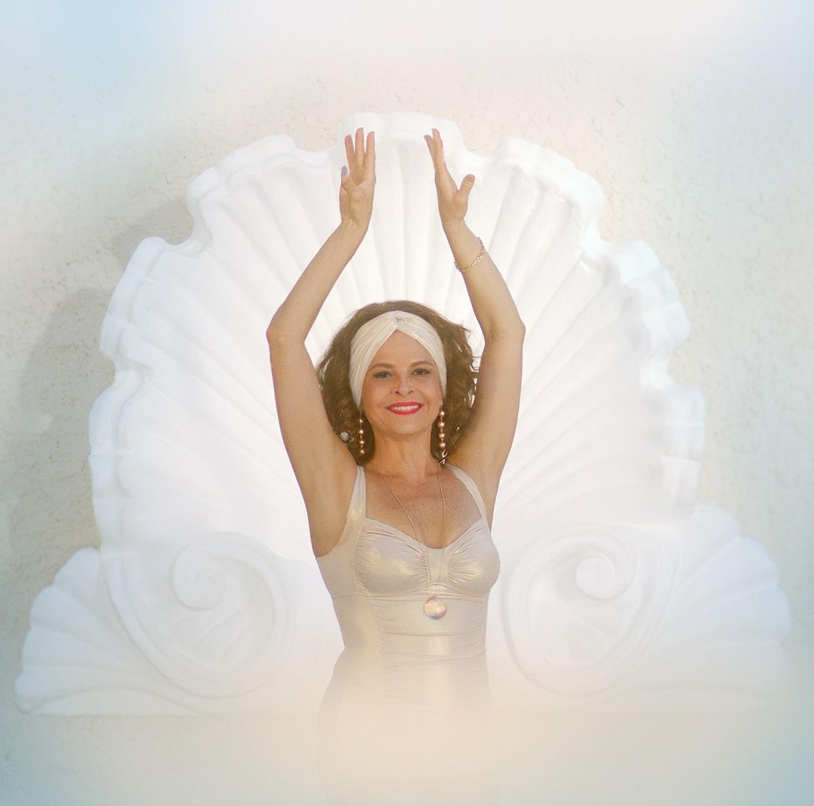
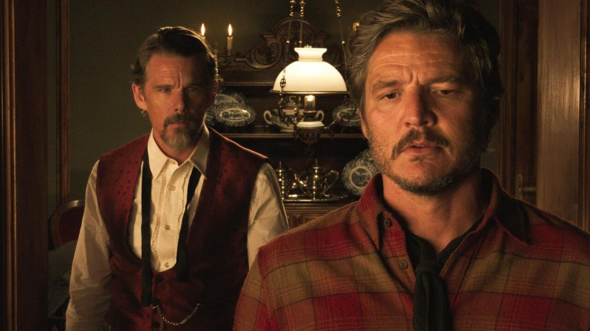

- 
PÉROLA
Brasil, 90min, 2023 | Sala Paulo Amorim | Drama
14h15/ 19h30
Direção: DE Murilo Benício
14 anos
A notícia da morte da mãe pega Mauro de surpresa e serve de motivo para que ele acione as lembranças desta mulher bem-humorada e generosa. Pérola era uma mãe devotada aos filhos, controladora e que só queria o melhor para sua família – como, por exemplo, uma casa grande com piscina. O filme é uma adaptação para o cinema da peça de mesmo nome escrita por Mauro Rasi e que foi um grande sucesso dos palcos brasileiros nos anos 1990, então protagonizada por Vera Holtz.
Mais informações
-
A CASA DOS PRAZERES
La Maison - França, 2023, 89min | Sala Norberto Lubisco | Drama
14h30/ 18h30
Direção: DE Anissa Bonnefont
18 anos
Aos 27 anos, a escritora Emma decide dedicar um livro ao universo da prostituição. Para entender melhor a vida destas “mulheres que ninguém se atreve a olhar nos olhos”, ela começa a trabalhar em um bordel chamado La Maison. Além de elementos para uma crônica realista, a experiência de Emma traz reflexões sobre a condição feminina, sororidade e machismo. O filme é baseado na experiência pessoal da escritora francesa Emma Becker, que trabalhou em dois bordeis da Alemanha durante quase dois anos.
Mais informações

OLDBOY
Coréia do Sul, 2023, 120min | Sala Eduardo Hirtz | Drama
15h00
Direção: DE Park Chan-wook
16 anos
Oh Dae-su passou 15 anos em um cativeiro, tendo somente uma televisão como entretenimento. Quando finalmente é liberto, ele tem cinco dias para identificar seu raptor e realizar sua vingança. Lançado há 20 anos, o filme foi um grande sucesso de público, ganhou muitos prêmios internacionais e abriu caminho para que outros títulos do cinema coreano ganhassem popularidade e estreassem pelo mundo afora. OLDBOY volta a cartaz em cópia restaurada e remasterizada a partir do negativo original em 35mm, sob supervisão do próprio diretor Park Chan-wook.
Mais informações
-
ELIS & TOM, SÓ TINHA DE SER COM VOCÊ
Brasil, 2022, 100min | Sala Paulo Amorim | Documentário
16h00
Direção: DE Roberto de Oliveira
12 anos
Lançado em 1974, "Elis & Tom" é um dos discos mais importantes da história da música brasileira. As gravações deste encontro entre Elis Regina e Tom Jobim ficaram guardadas por mais de quatro décadas e ganham às telas dos cinemas depois de um cuidadoso processo de restauração e remasterização. Além de clássicos como “Águas de Março”, Chovendo na Roseira” e “Modinha”, o público vai conhecer os bastidores no estúdio, incluindo algumas tensões e um pouco do processo criativo destes monstros sagrados da nossa música. A produção é também um reencontro emocionante do diretor com amigos e com os artistas envolvidos no projeto.
Mais informações
-
NOSSO SONHO
Brasil, 2023, 120min | Sala Norberto Lubisco | Musical
16h15
Direção: DE Eduardo Albergaria
12 anos
A dupla Claudinho e Buchecha foi um fenômeno da cultura brasileira nos anos 1990, alcançando fama e sucesso com o estilo musical funk melody. Eles eram amigos de infância em uma comunidade de Niterói, no Rio de Janeiro, e conquistaram o Brasil com ritmo e melodias envolventes. A cinebiografia é narrada do ponto de vista de Buchecha e faz uma homenagem a Claudinho, que morreu em 2002 em um acidente de carro.
Mais informações

RETRATOS FANTASMAS
Brasil, 2023, 91min | Sala Eduardo Hirtz | Documentário
17h15
Direção: DE Kleber Mendonça Filho
12 anos
O quinto filme do diretor é uma visão pessoal sobre memória e cotidiano. A partir de muito material de arquivo, próprio e pertencente a instituições, ele costura lembranças sobre o apartamento onde cresceu e sobre os antigos cinemas de rua de Recife, o que acaba revelando algumas verdades sobre a vida em sociedade. O documentário estreou no Festival de Cannes, em maio, e abriu o Festival de Gramado no sábado passado.
Mais informações
- 
ESTRANHA FORMA DE VIDA
Strange Way Of Life - Espanha/França, 2023, 83min | Sala Paulo Amorim | Drama
18h00
Direção: DE Pedro Almodóvar
14 anos
Depois de 25 anos, o rancheiro Silva resolve visitar seu velho amigo Jake, que é o xerife de Bitter Creek. Eles passam uma tarde de intimidades, reconciliação e lembranças - mas, no dia seguinte, as conexões com um crime do passado sugerem que há muito mais no encontro entre eles. Na versão para os cinemas, o média-metragem de 30min será exibido junto com uma entrevista exclusiva de Pedro Almodóvar.
Mais informações
-
MOSTRA PRIMAVERA GAÚCHA
Sala Eduardo Hirtz
19h00
Direção:
L
Acesse o site oficial da Primavera Gaúcha
Mais informações